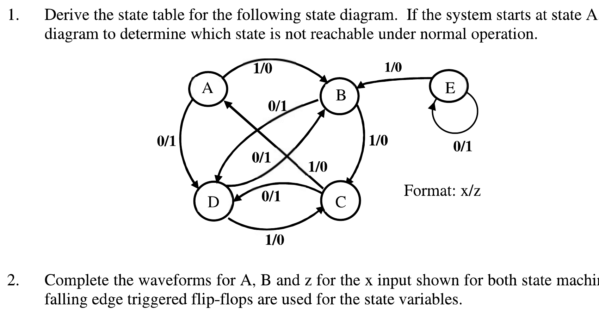

Week 10 — Synchronous Sequential Circuit Analysis
Lecture: "Sequential Circuits" (pages 59–76) · Tutorial 10, Q1–Q3
- FSM analysis: 11 parts, 7/7 papers, 124 of 700 marks (≈ 18 marks per paper) → see these questions with solutions.
- Same exam bucket as Week 9: practise the analysis recipe on past parts.
This page interleaves each idea with the question that tests it — learn a small piece, then use it immediately. Prefer one long read top-to-bottom instead? → Classic layout
The analysis problem: given a circuit, what does it actually do?
Week 9 gave you the vocabulary (Mealy/Moore, state diagrams, state tables). This week flips the direction: you're handed a real circuit — flip-flops plus gates — and asked to work out, from scratch, what sequence of states it moves through and what it's really "detecting" or "doing". This is exactly the reverse-engineering skill you already used for combinational circuits (Week 2), now applied to circuits that have memory.
The five-step analysis recipe
- Identify the functional blocks — which signals are the flip-flop inputs (next-state decoder outputs), and which are the true circuit outputs.
- Write the Boolean expression for every flip-flop input (in terms of the present state and the external input), and for every circuit output.
- Plot a K-map ("state map") for each of those expressions, if it helps simplify or visualise them (Week 5 skills, reused here).
- Build the Present-State/Next-State table — plug each row of present-state + input into the flip-flop input expressions, then use that flip-flop's characteristic table (Week 8) to work out what the next state actually becomes.
- Draw the state diagram from the table, then describe, in plain English, what behaviour it implements.
Step 4 is the one place people most often slip up — it's easy to compute the flip-flop inputs correctly and then forget that, e.g., an SR flip-flop's next state is not simply "next state = S" — you still have to run S and R back through the characteristic equation Qt+1=S+R̄Qt to find the real next state.
Worked Example 1: a 2-bit SR-flip-flop circuit
The lecture works through a 2-state-variable (A, B) Mealy machine built from two SR flip-flops, with next-state decoder equations:
What it calculates: the actual Set/Reset drive signal for each flip-flop, and the circuit's output Y, for any given present state (A,B) and input X. When to use it: this is Step 2 of the five-step recipe above — write these decoder equations before building the present/next-state table. Condition: these specific equations belong only to this 2-bit SR circuit; any other gate-level circuit needs its own equations read straight off its own gates.
I double-checked these equations and the resulting table by brute force across all 8 combinations of (A,B,X) — computing SA,RA,SB,RB,Y directly from the formulas above, and separately re-deriving At+1,Bt+1 from SA,RA,SB,RB using the SR characteristic equation (Qt+1=S+R̄Qt) — both independently matched the lecture's printed present/next-state table on every single row:
| A | B | X | SA | RA | SB | RB | Y | At+1 | Bt+1 |
|---|---|---|---|---|---|---|---|---|---|
| 0 | 0 | 0 | 0 | 0 | 0 | 0 | 0 | 0 | 0 |
| 0 | 0 | 1 | 0 | 1 | 1 | 0 | 0 | 0 | 1 |
| 0 | 1 | 0 | 1 | 0 | 0 | 0 | 0 | 1 | 1 |
| 0 | 1 | 1 | 0 | 0 | 1 | 0 | 0 | 0 | 1 |
| 1 | 0 | 0 | 0 | 0 | 0 | 1 | 0 | 1 | 0 |
| 1 | 0 | 1 | 0 | 1 | 0 | 0 | 1 | 0 | 0 |
| 1 | 1 | 0 | 1 | 0 | 0 | 1 | 0 | 1 | 0 |
| 1 | 1 | 1 | 0 | 0 | 0 | 0 | 0 | 1 | 1 |
Reading off the described behaviour (given directly in the lecture, and consistent with the verified table above): starting from reset (AB=00), the machine leaves reset only when X=1. From state 01, it needs at least two 0's in X (not necessarily consecutive) to reach state 10. From state 10, it returns to reset and outputs Y=1 exactly when X=1. Put together: this circuit detects any (non-overlapping) input pattern that starts with a 1 and ends with a 1, with at least two 0's somewhere in between.
Worked Examples 2–4: patterns worth recognising
| Example 2 (JK-based, with a LOAD output) | same 5-step recipe, but now some present-state combinations are never actually reached during normal operation (they can only occur from noise or an unexpected power-on condition). States like this are unused states — and it matters a lot whether an unused state is a hold state (the machine gets permanently stuck there) or not (it passes through within one clock cycle and self-corrects). A good design should never leave the machine stuck in an unused state forever. |
|---|---|
| Example 3 (D-flip-flops, no external input) | a "twisted-ring counter" — 3 flip-flops wired DA=C̄, DB=A, DC=B (each flip-flop just copies its neighbour, with one inversion in the loop). Two of the 8 possible states (010, 101) turn out to be isolated hold states, completely disconnected from the main counting sequence — exactly the "unused but not hold" vs. "unused and stuck" distinction from Example 2, now seen in a real counter topology. |
| Example 4 (JK-based, no external input) | another self-contained "no input" circuit — same recipe again: write the J/K equations from the gates, build the table using the JK characteristic table (Week 8), draw the diagram. |
Programmable hold states are a deliberate design feature, not a bug: a specific input condition can be used to intentionally park a machine in a state it will not leave except via a special reserved input — a handy built-in debugging/pause mechanism.
🔗 Practice: Tutorial 10 — now that you have all three concepts
All three questions below draw on the analysis recipe and the worked-example patterns above. Try each one yourself before opening the reveal.

Derive the state table for the diagram shown. Starting at state A, which state is not reachable?
Try it yourself first, then reveal the answer
You don't actually need to trace every single arrow to answer the reachability question — you only need to check, for each state, whether anything else in the diagram ever points into it. Scan the diagram for state E: it has a self-loop (0/1) and one outgoing arrow to B (1/0) — but nothing anywhere in the diagram has an arrowhead pointing into E. Since the system starts at A, and A, B, C, D only ever transition among themselves, there is no path that ever leads into E — E is the unreachable state. (E can only ever be the machine's state if it happens to start there, e.g. from an unintended power-on condition — exactly the "unused state" idea from the Slides section.)
To build the full state table yourself: for each of A, B, C, D, follow its two labelled outgoing arrows (one for X=0, one for X=1) and record the "next state, output" pair — exactly the state-table format from Week 9. I'd flag one honest limitation here: the scanned copy of this diagram has several crossing diagonal arrows in a tight X pattern between A/B and C/D, and pinning down exactly which arrowhead belongs to which line from the image alone carries real risk of a transcription error — safer to trace it directly off your own printed copy, following each state's two arrows one at a time, than to trust a possibly-misread pixel trace here.
Complete the waveforms for A, B, and z for the given x input, for two state machines side by side (falling-edge triggered flip-flops for the state variables).
Try it yourself first, then reveal the answer
This is the timing-diagram skill from Week 9, applied twice: at each falling clock edge, look up the current (A,B) state and the current x value in that machine's state diagram, and write down the next (A,B) — that becomes the flat, held value of A and B until the next falling edge. The two diagrams given are deliberately the same underlying state transitions, drawn once in Mealy style (output attached to each arrow, alongside the input) and once in Moore style (output attached to each state itself) — work through both waveforms side by side and you should be able to see directly why the Moore version's z output only ever changes exactly on a falling clock edge, while the Mealy version's z can, in principle, shift as soon as x changes — the exact hazard flagged in the Week 9 Slides section.
Analyze and draw the state diagram for the circuit shown.
Try it yourself first, then reveal the answer
I have to flag this one honestly rather than guess: the circuit diagram for this question is missing from the scanned tutorial PDF — the space between question 3's text and question 4 is simply blank on the source page, most likely lost in an earlier photocopy/scan generation. I can't responsibly reconstruct a circuit that isn't there to read. If you can get a cleaner copy of this tutorial from your professor or a classmate, the method to apply is exactly the 5-step recipe above: identify the flip-flop input equations from the gates, build the present/next-state table using the relevant characteristic table, then draw the diagram from that table.
✍️ Write This Down
Copy these into your own notes:
- FSM analysis recipe: (1) identify FF-input and output expressions, (2) write their Boolean equations, (3) K-map if useful, (4) build present/next-state table using the flip-flop's characteristic table, (5) draw the state diagram and describe the behaviour.
- Common trap: the next state is not the flip-flop input directly — always run the flip-flop inputs back through that flip-flop's own characteristic equation to get the true next state.
- A state is unreachable if no arrow in the whole diagram ever points into it from the reachable part of the graph — check incoming arrows, not outgoing ones.
- An unused state that the machine can still pass through and leave within one clock cycle is safe; an unused state the machine gets permanently stuck in is a hold state — a real design hazard unless it's an intentional programmable hold state.
- A "twisted-ring counter" (DA=C̄, DB=A, DC=B style wiring) is a classic circuit with isolated hold states outside its main counting sequence — worth recognising the shape on sight.
🟥 Redstone Build: Analyze Your Own Machine
This week is about reading circuits, not just building them — so the most useful redstone exercise is to build a small mystery circuit and then analyze it exactly like the lecture examples.
- Build a small 2-bit memory (two of your Week 8 flip-flop cells) and wire their inputs from some arbitrary combination of the two state outputs plus one lever input — anything you like, as long as it's not a copy of a circuit you already know the behaviour of.
- Without simulating it in your head first, apply the 5-step recipe for real: write down each flip-flop's actual input condition (in redstone terms: which levers/torches feed each Set/Reset line), build a present/next-state table by physically stepping the lever through every combination at every state, and draw the resulting state diagram from what you observe.
- Check for unreachable or hold states directly: manually force the memory cells into every one of the 4 possible states (using the levers, bypassing normal operation) and confirm which ones the circuit naturally flows out of versus which ones it gets stuck in.
This turns the abstract "assume a circuit, derive its diagram" tutorial exercise into something you can physically verify with lamps, rather than trusting a purely on-paper derivation.